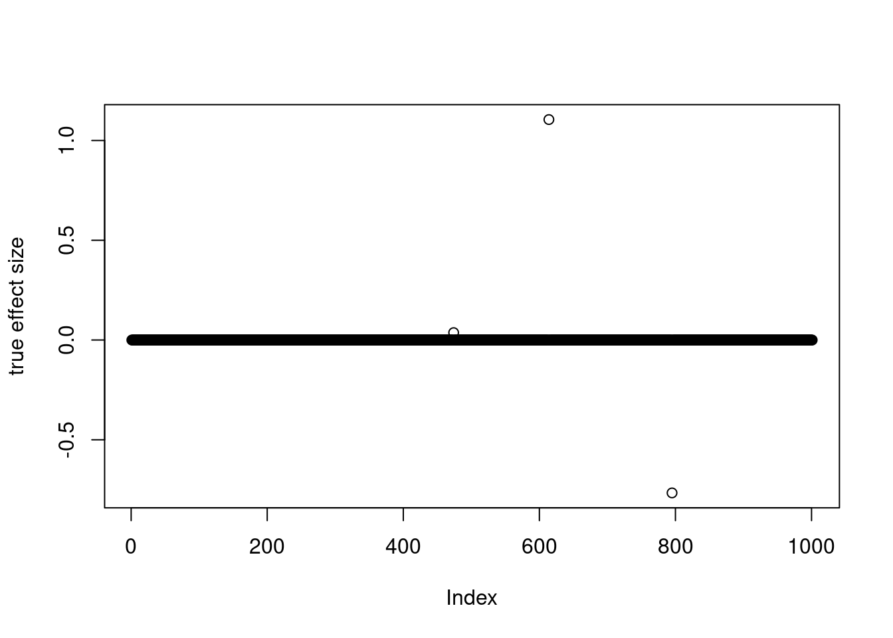
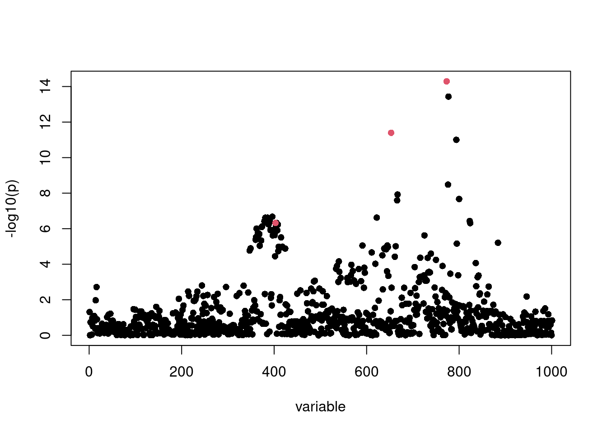
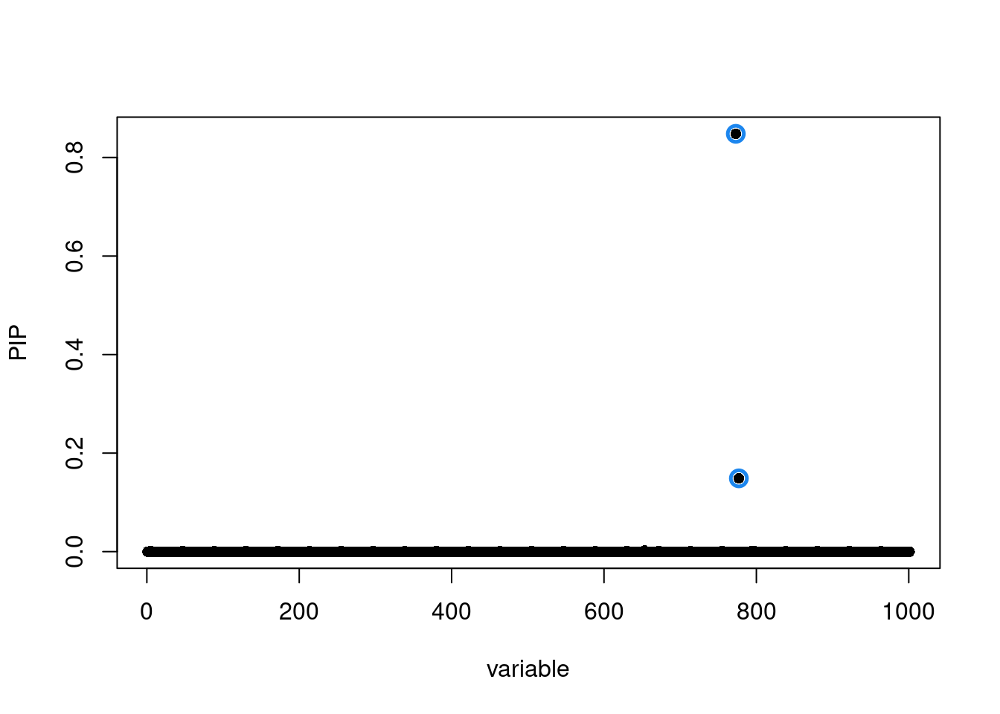
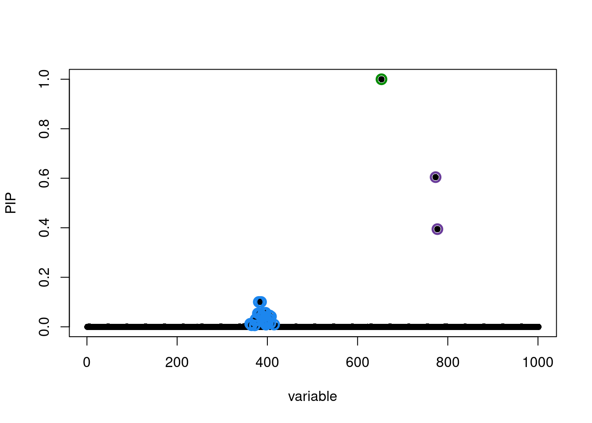
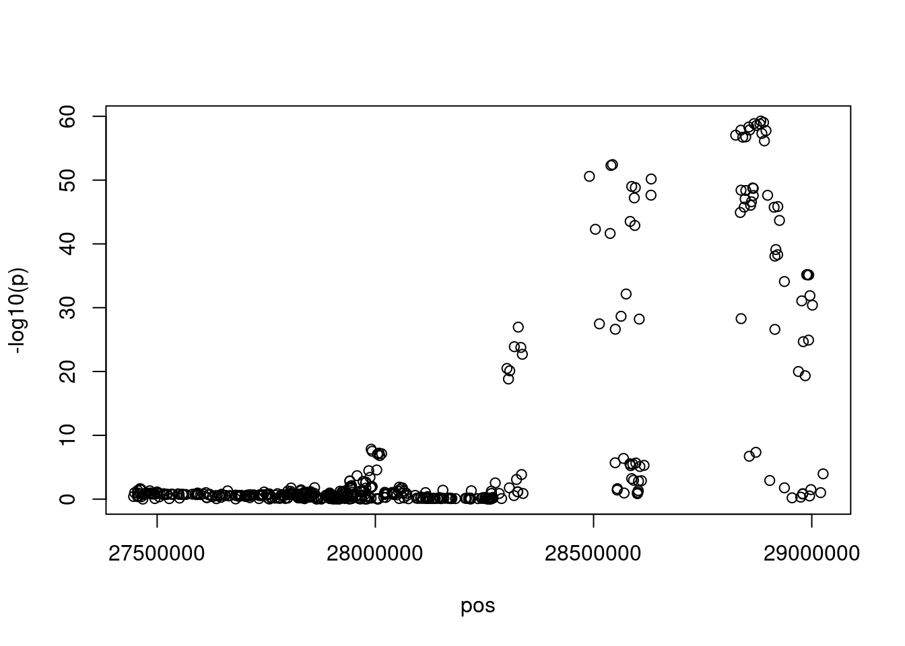
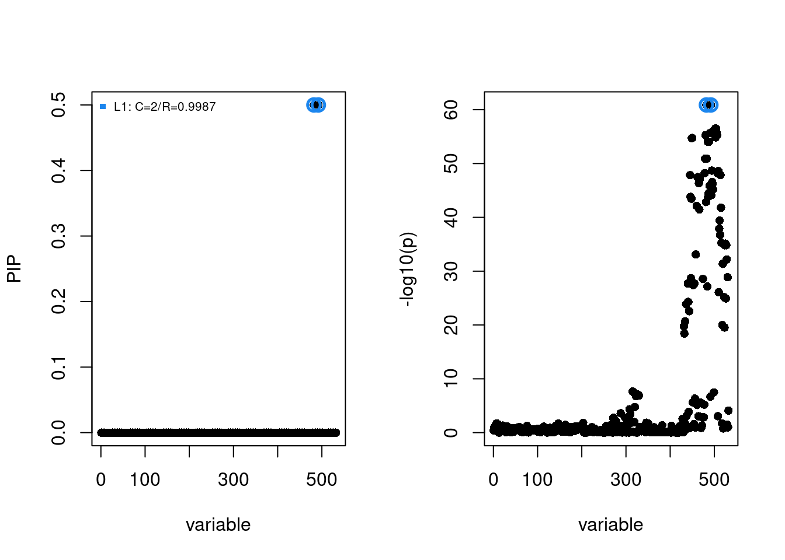
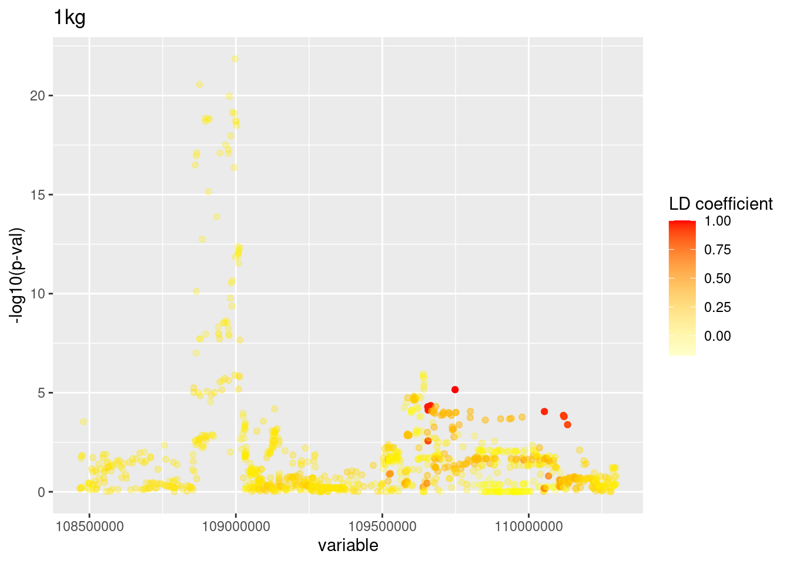
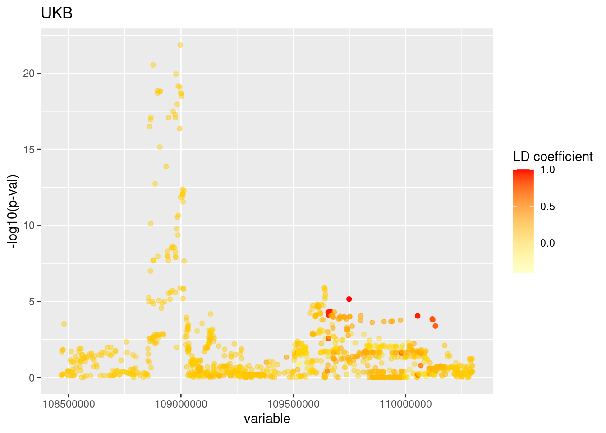

Last updated: 2022-02-04
Checks: 6 1
Knit directory: funcFinemapping/
This reproducible R Markdown analysis was created with workflowr (version 1.6.2). The Checks tab describes the reproducibility checks that were applied when the results were created. The Past versions tab lists the development history.
The R Markdown is untracked by Git. To know which version of the R Markdown file created these results, you'll want to first commit it to the Git repo. If you're still working on the analysis, you can ignore this warning. When you're finished, you can run wflow_publish to commit the R Markdown file and build the HTML.
Great job! The global environment was empty. Objects defined in the global environment can affect the analysis in your R Markdown file in unknown ways. For reproduciblity it's best to always run the code in an empty environment.
The command set.seed(20210404) was run prior to running the code in the R Markdown file. Setting a seed ensures that any results that rely on randomness, e.g. subsampling or permutations, are reproducible.
Great job! Recording the operating system, R version, and package versions is critical for reproducibility.
Nice! There were no cached chunks for this analysis, so you can be confident that you successfully produced the results during this run.
Great job! Using relative paths to the files within your workflowr project makes it easier to run your code on other machines.
Great! You are using Git for version control. Tracking code development and connecting the code version to the results is critical for reproducibility.
The results in this page were generated with repository version 2532745. See the Past versions tab to see a history of the changes made to the R Markdown and HTML files.
Note that you need to be careful to ensure that all relevant files for the analysis have been committed to Git prior to generating the results (you can use wflow_publish or wflow_git_commit). workflowr only checks the R Markdown file, but you know if there are other scripts or data files that it depends on. Below is the status of the Git repository when the results were generated:
Ignored files:
Ignored: .ipynb_checkpoints/
Ignored: analysis/figure/
Ignored: analysis/lab4_prepare.nb.html
Ignored: analysis/ldsc_results.nb.html
Ignored: analysis/mtsplice_finemapping_results.nb.html
Ignored: analysis/results.nb.html
Ignored: analysis/snp_finemapping_results.nb.html
Ignored: analysis/splicing.nb.html
Ignored: analysis/susie_tutorial.nb.html
Untracked files:
Untracked: SNPs_categories,png
Untracked: SNPs_categories.png
Untracked: analysis/.ipynb_checkpoints/
Untracked: analysis/asthma_prelim_results_archive.Rmd
Untracked: analysis/asthma_prelim_results_cp.Rmd
Untracked: analysis/asthma_results_cp.Rmd
Untracked: analysis/enhancer_gene_feature.Rmd
Untracked: analysis/feedback.Rmd
Untracked: analysis/gene_finemapping_results.Rmd
Untracked: analysis/lab4.Rmd
Untracked: analysis/lab4_prepare.Rmd
Untracked: analysis/learn_susie.Rmd
Untracked: analysis/mtsplice_finemapping_results.Rmd
Untracked: analysis/notes.Rmd
Untracked: analysis/snp_finemapping_results.Rmd
Untracked: analysis/splicing.Rmd
Untracked: analysis/susie_tutorial.Rmd
Untracked: bmi_locus1410.pdf
Untracked: code/.ipynb_checkpoints/
Untracked: code/ldsc_regression.sh
Untracked: code/make_plots.R
Untracked: code/run_ldsc.sh
Untracked: code/run_ldsc_with_bed.sh
Untracked: code/run_ldsc_with_bed_v2.sh
Untracked: code/run_susie.R
Untracked: code/run_torus.sh
Untracked: code/split_vcf.sh
Untracked: data/hg19_gtf_genomic_annots_ver2.gr.rds
Untracked: data/num_overlaps_finemapped_SNPs_and_ctcf.txt
Untracked: data/scz_2018
Untracked: data/torus_enrichment_novel_annot.est
Untracked: data/torus_joint_enrichment.est
Untracked: data/torus_joint_refined_enrichment.est
Untracked: enhancer_gene_feature.rmd
Untracked: fig1_panels.pdf
Untracked: fig2.pdf
Untracked: fig_panel2.pdf
Untracked: gene_mapping.pdf
Untracked: lab4
Untracked: output/AAD/GMP_merge_stats.txt
Untracked: output/AAD/allergy/Ulirsch2019/GMP_merge_compare_old.est
Untracked: output/AAD/asthma_adult/Ulirsch2019/CD4_compare_old.est
Untracked: output/AAD/asthma_adult/Ulirsch2019/CD8_compare_old.est
Untracked: output/AAD/asthma_adult/Ulirsch2019/GMP_merge_compare_old.est
Untracked: output/AAD/asthma_child/Ulirsch2019/GMP_merge_compare_old.est
Untracked: output/LDL_ukb_L10.gif
Untracked: output/LDL_ukb_L10.pdf
Untracked: output/background_SNPs_annotated_percent.txt
Untracked: output/locus_1452.gif
Untracked: output/locus_1452.pdf
Untracked: panel_figure2.pdf
Untracked: test.txt
Untracked: transfer/
Unstaged changes:
Deleted: .Rprofile
Modified: analysis/asthma_prelim_results.Rmd
Modified: analysis/asthma_results.Rmd
Modified: analysis/enrichment_analysis.Rmd
Modified: output/AAD/allergy/Ulirsch2019/GMP_merge_compare.est
Deleted: output/AAD/asthma/Caldero2019_diffDA_annot_percent.txt
Deleted: output/AAD/asthma/Caldero2019_stimuDA_annot_percent.txt
Deleted: output/AAD/asthma/celltype_specific_adult_lungs_torus.est
Deleted: output/AAD/asthma/diffe_adult_blood_torus.est
Deleted: output/AAD/asthma/joint_blood_immune_rest_vs_stimu.est
Deleted: output/AAD/asthma/joint_lung_vs_blood_immune_diff_torus.est
Deleted: output/AAD/asthma/joint_lung_vs_blood_immune_stimu_torus.est
Deleted: output/AAD/asthma/lung_clusters_dict.txt
Deleted: output/AAD/asthma/lung_clusters_info.txt
Deleted: output/AAD/asthma/stimu_adult_blood_torus.est
Deleted: output/AAD/asthma/torus_enrichment_all_rest.est
Deleted: output/AAD/asthma/torus_enrichment_all_stimulated.est
Deleted: output/AAD/asthma/zhang2021_annot_percent.txt
Deleted: output/AAD/asthma/zhang2021_cell_type_overlaps.txt
Deleted: output/AAD/asthma/zhang2021_peaks_per_celltype.txt
Modified: output/AAD/asthma_adult/Ulirsch2019/CD4_compare.est
Modified: output/AAD/asthma_adult/Ulirsch2019/CD8_compare.est
Deleted: output/AAD/asthma_adult/Ulirsch2019/GMP_merge_compare.est
Modified: output/AAD/asthma_child/Ulirsch2019/GMP_merge_compare.est
Deleted: output/asthma/Caldero2019_diffDA_annot_percent.txt
Deleted: output/asthma/Caldero2019_stimuDA_annot_percent.txt
Deleted: output/asthma/celltype_specific_adult_lungs_torus.est
Deleted: output/asthma/diffe_adult_blood_torus.est
Deleted: output/asthma/joint_lung_vs_blood_immune_diff_torus.est
Deleted: output/asthma/joint_lung_vs_blood_immune_stimu_torus.est
Deleted: output/asthma/lung_clusters_dict.txt
Deleted: output/asthma/lung_clusters_info.txt
Deleted: output/asthma/stimu_adult_blood_torus.est
Deleted: output/asthma/zhang2021_annot_percent.txt
Deleted: output/asthma/zhang2021_cell_type_overlaps.txt
Deleted: output/asthma/zhang2021_peaks_per_celltype.txt
Note that any generated files, e.g. HTML, png, CSS, etc., are not included in this status report because it is ok for generated content to have uncommitted changes.
There are no past versions. Publish this analysis with wflow_publish() to start tracking its development.
Created by Jing Gu
SuSiE is a state-of-art fine-mapping method based on Bayesian variable selection regression. The name of "SuSiE" means the sum of single effects, which detects single causal effect one at a time but also extends to multiple effects through conditional analysis.
SusieR package was developed to run fine-mapping procedures over GWAS summary statistics or invidiual level genotype/phenotype data. More details about the SusieR package can be found at [SusieR github page] [https://stephenslab.github.io/susieR/index.html].
By the end of the lab, you should be able to:
First, let's download necessary packages and load data for today's lab session
Loading required package: susieRLoading required package: data.tableLoading required package: dplyr
Attaching package: 'dplyr'The following objects are masked from 'package:data.table':
between, first, lastThe following objects are masked from 'package:stats':
filter, lagThe following objects are masked from 'package:base':
intersect, setdiff, setequal, unionLoading required package: bigsnprLoading required package: bigstatsrLoading required package: ggplot2Warning in data("lab4/susie.RData"): data set 'lab4/susie.RData' not foundsusie() or Summary statistics: susie_rss()Let's first test the performance of susieR on the simulated dataset. There are two simulation replicates in the dataset. We will focus on the first one.
load N3finemapping from susieR package
data(N3finemapping)
attach(N3finemapping)
str(N3finemapping)List of 8
$ X : num [1:574, 1:1001] -0.0209 -0.0209 -0.0209 -0.0209 -0.0209 ...
$ chrom : chr "chr19"
$ pos : int [1:8750(1d)] 7302164 7302332 7302591 7303825 7304182 7304408 7305504 7306114 7306459 7306697 ...
$ true_coef : num [1:1001, 1:2] 0 0 0 0 0 0 0 0 0 0 ...
$ residual_variance: num [1:2(1d)] 6.29 1.65
$ Y : num [1:574, 1:2] 0.2284 -0.6509 0.0768 -3.1507 2.338 ...
$ allele_freq : num [1:1001, 1] 0.0105 0.2631 0.419 0.0261 0.0819 ...
$ V : num [1:2, 1:2] 7.842 -0.221 -0.221 2.131We can identify which variables are simulated as truly causal by searching for \(b\neq0\).
which(true_coef[,1] !=0)[1] 403 653 773plot(true_coef[,2], ylab = "true effect size") Run linear regression to obtain p-values, similar as running GWAS
sumstats <- univariate_regression(X, Y[,1])
z_scores <- sumstats$betahat / sumstats$sebetahat
susie_plot(z_scores, y = "z", b = true_coef[,1]) Fine-mapping with susieR at L = 1
The susie_plot() function is a scatter plot of PIP or z scores against variant index. The variables selected into credible sets are colored by groups.
fitted.L1 <- susie(X, Y[,1],
L = 1,
verbose = TRUE)For an X with many columns, please consider installing the Rfast package for more efficient credible set (CS) calculations.[1] "objective:-1386.58122361469"
[1] "objective:-1385.18416210208"
[1] "objective:-1385.17881826275"
[1] "objective:-1385.17879793437"
[1] "objective:-1385.17879786253"susie_plot(fitted.L1, y="PIP") Fine-mapping with susieR at L = 10
fitted.L10 <- susie(X, Y[,1],
L = 10,
verbose = TRUE)For an X with many columns, please consider installing the Rfast package for more efficient credible set (CS) calculations.[1] "objective:-1380.57545244462"
[1] "objective:-1377.48660917726"
[1] "objective:-1375.85777207947"
[1] "objective:-1375.80892301654"
[1] "objective:-1370.33949333218"
[1] "objective:-1370.19677277173"
[1] "objective:-1370.10919739198"
[1] "objective:-1370.10918017465"
[1] "objective:-1370.10901872279"susie_plot(fitted.L10, y="PIP") By default, a credible set is defined as the minimum set of variables of which PIPs sum up to be at least 95%, and the minimum mean correlations within a set to be 0.5.
Problem 1: With seting L = 10, are the causal variables included in the credible sets?
print(fitted.L10$sets)$cs
$cs$L2
[1] 653
$cs$L1
[1] 773 777
$cs$L3
[1] 362 365 372 373 374 379 381 383 384 386 387 388 389 391 392 396 397 398 399
[20] 400 401 403 404 405 407 408 415
$purity
min.abs.corr mean.abs.corr median.abs.corr
L2 1.0000000 1.0000000 1.0000000
L1 0.9815726 0.9815726 0.9815726
L3 0.8686309 0.9640176 0.9720711
$cs_index
[1] 2 1 3
$coverage
[1] 0.9998236 0.9988858 0.9539811
$requested_coverage
[1] 0.95It has been shown through simulations that the finemapping results are robust to the choices of L.
Let's first take a look at GWAS summary statistics file. There is one additional column that specifies the LD block that each variant belongs.
head(gwas) chr pos a0 a1 beta se snp pval zscore block
1 6 108467024 A G 0.0007 0.0018 rs218291 0.700 0.3888889 704
2 6 108469920 T G -0.0009 0.0019 rs170125 0.630 -0.4736842 704
3 6 108470257 A G -0.0088 0.0038 rs12173906 0.020 -2.3157895 704
4 6 108471948 C T 0.0008 0.0018 rs660532 0.660 0.4444444 704
5 6 108474665 G T -0.0092 0.0038 rs9400209 0.015 -2.4210526 704
6 6 108474935 C T -0.0093 0.0038 rs9400210 0.015 -2.4473684 704gwas<-split(gwas, gwas$block)
names(gwas)[1] "704" "1452"By plotting -log10(p) against genomic positions, we see many SNPs near the lead SNP passing the significance threashold. To help prioritize SNPs for downstream analysis and validation, fine-mapping provides a statistical approach to evaluate each SNP's causal probability.
orig.gwas<-gwas[["1452"]]
plot(x = orig.gwas$pos, y = -log10(orig.gwas$pval),
xlab = "pos", ylab="-log10(p)") ## Step 1: match variants between GWAS summary stats and LD panel Bigsnpr is a very useful R packpage to process genotype data. We will use its "snp_match" function to match variants in GWAS summary stats and LD panels. This function outputs a summary table with previous GWAS summary statistics for the matched SNPs and additional columns such as the "bigSNP_index", the index number for each matched variant in the LD panels. We will further utilize these index numbers to quickly extract the LD coefficients from the LD matrix.
matched.gwas<-as_tibble(bigsnpr::snp_match(sumstats = gwas[["1452"]],
info_snp = bigSNP[["1452"]]$map) %>%
dplyr::rename(og_index = `_NUM_ID_.ss`) %>%
dplyr::rename(bigSNP_index = `_NUM_ID_`))537 variants to be matched.0 ambiguous SNPs have been removed.532 variants have been matched; 0 were flipped and 162 were reversed.Problem 2: From the help page of "snp_match" function, we know when the alleles are reversed the directions of beta values will be reversed as well. Let's make a scatter plot comparing the beta values from original gwas against those from the matched gwas.
Problem 3: Make the same plot for z-scores. The directions of z scores can have a big impact on susie's performance. So be careful about specifying the right z-scores used in susie. Otherwise, you can directly compute zscores by dividing beta from se(beta). This relationship also implies the direction of z scores should be the same as beta.
Knowing the directions of z scores were not updated, we manually computed the z scores in the following codes and repeated this step by looping over all the LD blocks.
for(i in names(gwas)){
gwas[[i]]<-as_tibble(bigsnpr::snp_match(sumstats = gwas[[i]],
info_snp = bigSNP[[i]]$map) %>%
dplyr::rename(og_index = `_NUM_ID_.ss`) %>%
dplyr::rename(bigSNP_index = `_NUM_ID_`)) %>%
dplyr::mutate(z_matched = beta/se)
}1,174 variants to be matched.0 ambiguous SNPs have been removed.1,172 variants have been matched; 0 were flipped and 284 were reversed.537 variants to be matched.0 ambiguous SNPs have been removed.532 variants have been matched; 0 were flipped and 162 were reversed.The given LD matrix for each LD block is a N by N matrix, where N is the number of common variants within the block. The row and column index match with the "bigSNP_index" in the summary table output from snp_match function.
snps.vec<-gwas[["1452"]]$bigSNP_index
r2.mat<-bigSNP[["1452"]]$LD_matrix[snps.vec, snps.vec]
#check if the bigSNP_index matches between GWAS and the LD panel
sum(gwas[["1452"]]$snp != bigSNP[["1452"]]$map[snps.vec,"id"])[1] 0Let's first try L=1. Here we sepcified z scores as the column of "z_matched", which was corrected by directions.
res.L1 <- susieR::susie_rss(z = gwas[["1452"]]$z_matched, R = r2.mat, L = 1, verbose = F)
summary(res.L1)
Variables in credible sets:
variable variable_prob cs
492 0.4999607 1
482 0.4999607 1
Credible sets summary:
cs cs_log10bf cs_avg_r2 cs_min_r2 variable
1 55.70593 0.9973469 0.9973469 482,492res.L1[["z"]]<-gwas[["1452"]]$z_matched
par(mfrow = c(1,2))
susie_plot(res.L1, "PIP", add_legend = "topleft")
susie_plot(res.L1, y="z") From the output summary, we know one credible set was identified. There are two variants, index 482 and 492, included in the credible set, each with around 0.5 posterior probability. As their average LD correlation is very close to one, Susie was not able to distinguish between them. Therefore, the probability of being causal given data were equally distributed between these two variables. Problem
Problem 4: Run susie at L=10 and then report the number of variables selected in each credible set. Additionally, use susie_plot() to visualize the distributions of PIPs and -log10(pval).
Now we are done with the general procedures for running susie. Let's put them together and loop over all the blocks.
susie.ukb.L10<-list()
for(i in names(gwas)){
snps.vec<-gwas[[i]]$bigSNP_index
r2.mat<-bigSNP[[i]]$LD_matrix[snps.vec, snps.vec]
susie.ukb.L10[[i]]<-susie_rss(z = gwas[[i]]$z_matched, R = r2.mat, L = 10, verbose = F)
susie.ukb.L10[[i]][["z"]]<-gwas[[i]]$z_matched #add the original z scores to susie outputs
}For large R or large XtX, consider installing the Rfast package for better performance.Lastly, we will examine how the mismatch of LD matrix can affect how variants are selected into credible sets . Our previous analysis was based on the LD matrix computed over around 50K British individuals provided by UK Biobank. In the dataset, we also provided the fine-mapped results using the LD matrix from samples in 1000 genome consortium. The LD matrix for the 1kg LD reference panel was computed over 500 Eurpean individuals.
When comparing the fine-mapped results over all 97 blocks that contain GWAS lead loci, we found using 1kg LD reference panel tends to capture many more variants with non-significant p-values in credible sets. This looks suspicious and deserves some examinations. Let's focus on one specific LD block 704 and see how the results differ due to the use of different LD reference panels.
Problem 5. Compare the credible sets obtained from running susie using ukbb LD matrix and 1kg LD matrix. The susie outputs from using 1kg LD matrix are stored in a variable called susie.1kg.L10. Also make the plots of PIPs or -log10(p-val) to show the difference.
Check the LD patterns relative to the confident SNP in credible sets
We can also visualize LD patterns by coloring the data points by the LD coefficients relative to the SNP of interest. Particularly, we examined the SNP with the highest SNP in the additional credible set identified by susie using 1kg LD reference panel. From the plot below, LD coefficients relative to the top snp rs12204742 in that credible set overall look stronger in UKB LD panel shown by darker color. When we add up the PIPs for all SNPs in the credible set identified by 1kg LD reference, the total PIP does not pass the default threshold. Thus, the fine-mapped results can be affected by the differences in LD reference panels. This differences may be sutble in this example, but more spurious results have been seen with mismatched LD references.
ggplot(susie.1kg[["704"]]$gwas, aes(x=pos,y=-log10(pval), color=susie.1kg[["704"]]$LD.coef[789,])) +
geom_point() + scale_color_gradient(low = alpha("yellow", 0.2), high ="red") +
labs(color="LD coefficient") + labs(title = "1kg") +
ylab("-log10(p-val)") + xlab("variable") 
ggplot(gwas[["704"]], aes(x=pos,y=-log10(pval), color=bigSNP[["704"]]$LD_matrix[gwas[["704"]][788,]$bigSNP_index, gwas[["704"]]$bigSNP_index])) +
geom_point() + scale_color_gradient(low = alpha("yellow", 0.2), high ="red") +
labs(color="LD coefficient") + labs(title = "UKB") +
ylab("-log10(p-val)") + xlab("variable") 
sessionInfo()R version 4.0.4 (2021-02-15)
Platform: x86_64-pc-linux-gnu (64-bit)
Running under: Scientific Linux 7.4 (Nitrogen)
Matrix products: default
BLAS/LAPACK: /software/openblas-0.3.13-el7-x86_64/lib/libopenblas_haswellp-r0.3.13.so
locale:
[1] LC_CTYPE=en_US.UTF-8 LC_NUMERIC=C
[3] LC_TIME=en_US.UTF-8 LC_COLLATE=en_US.UTF-8
[5] LC_MONETARY=en_US.UTF-8 LC_MESSAGES=en_US.UTF-8
[7] LC_PAPER=en_US.UTF-8 LC_NAME=C
[9] LC_ADDRESS=C LC_TELEPHONE=C
[11] LC_MEASUREMENT=en_US.UTF-8 LC_IDENTIFICATION=C
attached base packages:
[1] stats graphics grDevices utils datasets methods base
other attached packages:
[1] ggplot2_3.3.3 bigsnpr_1.8.1 bigstatsr_1.5.1 dplyr_1.0.4
[5] data.table_1.14.2 susieR_0.11.92
loaded via a namespace (and not attached):
[1] tidyselect_1.1.1 xfun_0.21 bslib_0.2.4 purrr_0.3.4
[5] lattice_0.20-41 bigassertr_0.1.4 colorspace_2.0-2 vctrs_0.3.8
[9] generics_0.1.0 htmltools_0.5.1.1 yaml_2.2.1 utf8_1.2.2
[13] rlang_0.4.11 mixsqp_0.3-43 jquerylib_0.1.3 later_1.1.0.1
[17] pillar_1.5.0 withr_2.4.2 glue_1.4.2 DBI_1.1.1
[21] matrixStats_0.58.0 foreach_1.5.1 lifecycle_1.0.0 plyr_1.8.6
[25] stringr_1.4.0 munsell_0.5.0 gtable_0.3.0 workflowr_1.6.2
[29] codetools_0.2-18 evaluate_0.14 labeling_0.4.2 knitr_1.31
[33] doParallel_1.0.16 httpuv_1.5.5 parallel_4.0.4 irlba_2.3.3
[37] fansi_0.5.0 highr_0.8 Rcpp_1.0.7 promises_1.2.0.1
[41] scales_1.1.1 bigsparser_0.4.4 jsonlite_1.7.2 farver_2.1.0
[45] fs_1.5.0 digest_0.6.27 bigparallelr_0.3.1 stringi_1.5.3
[49] cowplot_1.1.1 grid_4.0.4 rprojroot_2.0.2 tools_4.0.4
[53] magrittr_2.0.1 sass_0.3.1 tibble_3.0.6 crayon_1.4.1
[57] pkgconfig_2.0.3 ellipsis_0.3.2 Matrix_1.3-4 assertthat_0.2.1
[61] rmarkdown_2.7 reshape_0.8.8 iterators_1.0.13 R6_2.5.1
[65] flock_0.7 git2r_0.28.0 compiler_4.0.4